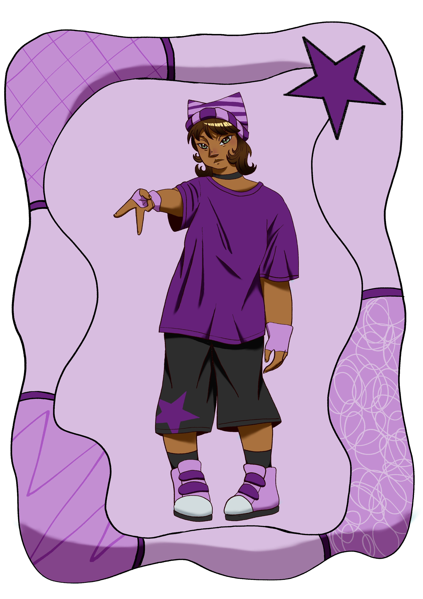

Quem é Clara?
Clara é uma garota que está sempre com a cara emburrada, fazendo as pessoas terem medo de falar com ela por sua hostilidade. Mas aqueles viram além de sua cara de mal humor, viram que Clara é uma pessoa divertida que se importa muito com seus amigos.
Ela, Gabriella e Bianca estão sempre criando novas histórias durante os recreios, tendo varios projetos no bolso que não vão para frente. Sua amiga mais proxima é Bianca, que parece entender a loucura de sua cabeça como ninguém. Mas parece que a amizade dela e de Gabriella aumenta a cada dia, mas as vezes Clara sente que Gabriella não se entrega por inteiro em sua imaginação.